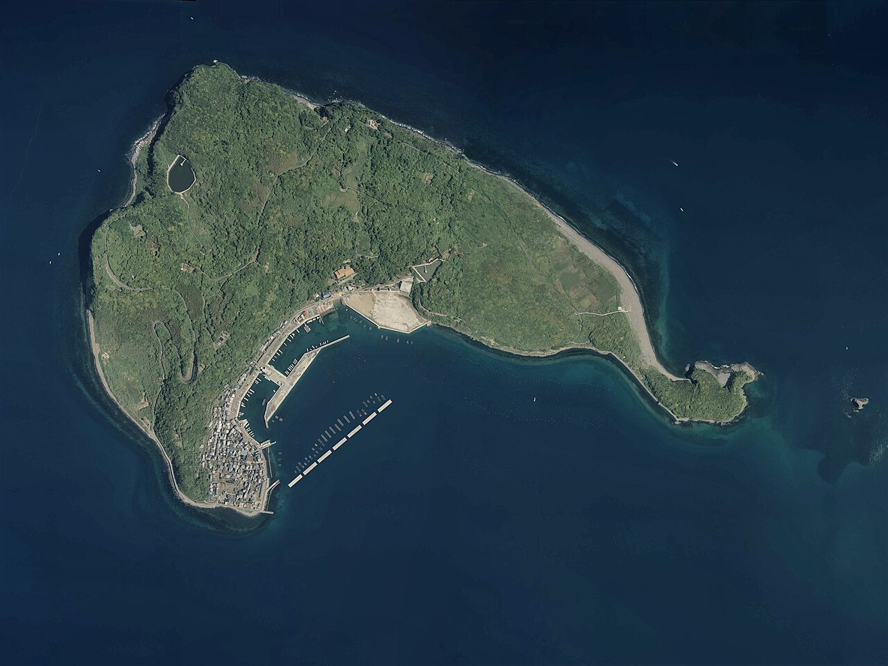
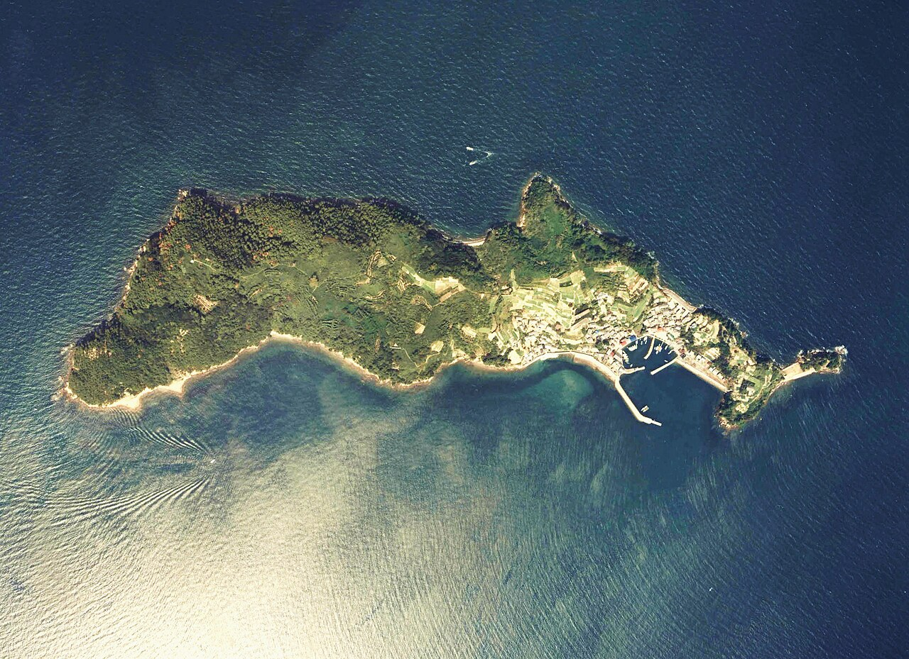
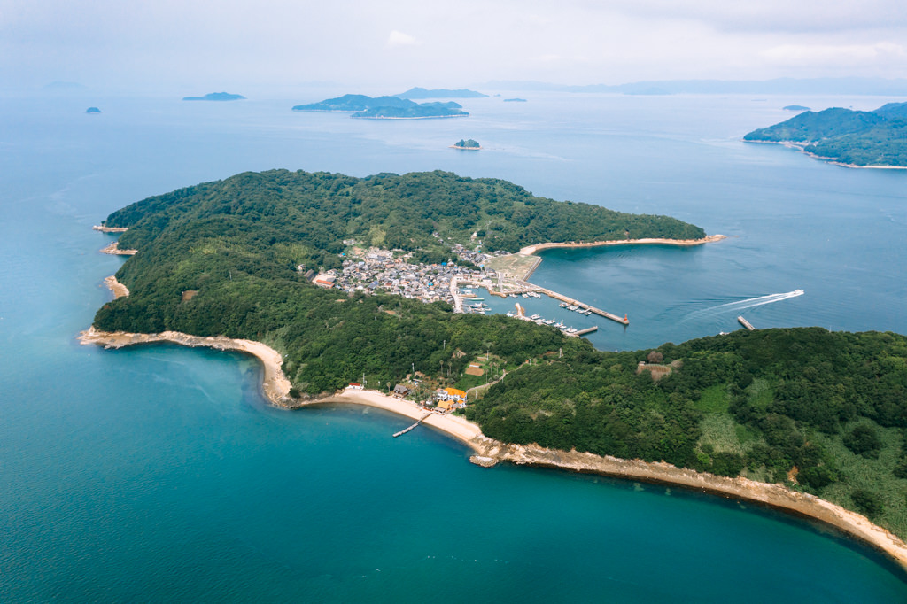
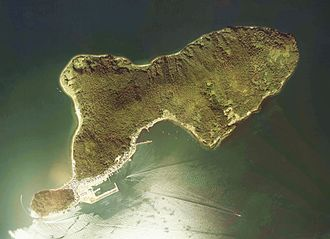
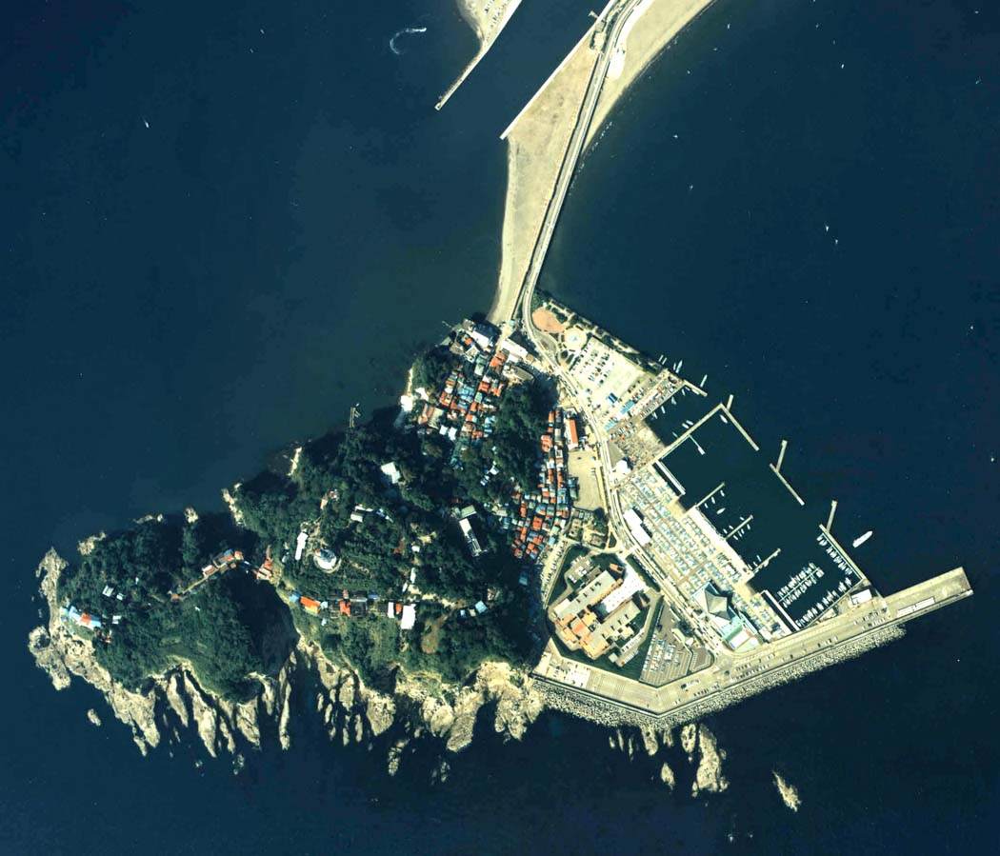
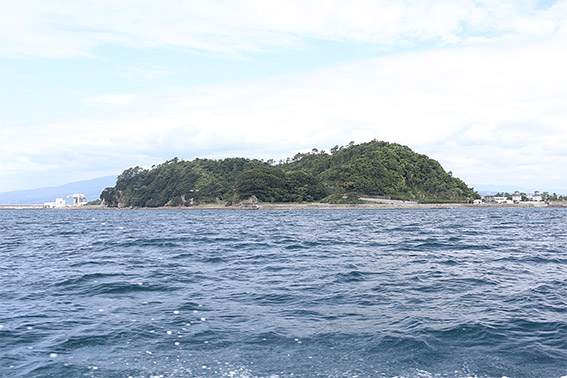

Ainoshima Island

Aoshima

Manabe Island

Okishima

Enoshima

Tashirojima

Entdecke Japans Katzeninseln – kleine, idyllische Inseln, auf denen freilaufende Katzen das Ortsbild prägen. Umgeben von Meer und ursprünglicher Natur bieten sie eine ruhige Auszeit vom Alltag. Besucher erleben hier entschleunigtes Inselleben, traditionelle Fischerdörfer und eine besondere Nähe zwischen Mensch, Tier und Landschaft. 🐾